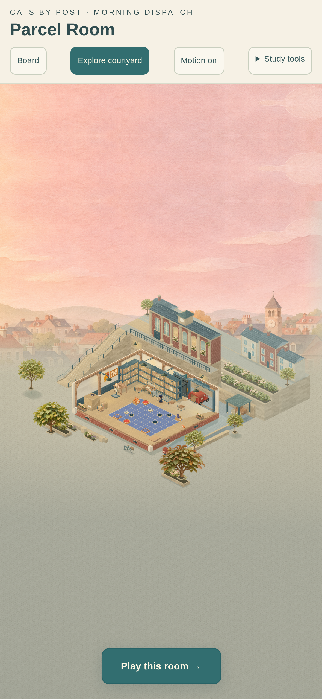

CATS BY POST · MORNING DISPATCH
The same room, less work.
Explore courtyard · Play maximum board · Accepted character finish
Performance candidate for the reported iPhone 17 Pro / iOS 27 lag and occasional tab exits. These are controlled software-browser measurements. A real iPhone retest is still needed.

Corrected · whole courtyard
Measured change
Retained bytes count known room images, canvases and typed arrays. They exclude shared buffers, browser/GPU overhead and temporary peaks. A separate partial inventory finds another 22.5MB of retained shared buffers. Frame timings come from software Chromium, not Safari or a physical device.
What changed
Rendering matches physical screen pixels. Cropped scenery caches move with the camera and refresh sharply when movement stops. The static background is combined, while foreground objects keep their original depth order. Zoom no longer allocates unused legacy rendering buffers.
All van poses retain their original pixels and doorway masking. The room artwork is prepared during the build, avoiding heavy phone-side baking. Original texture resolution, gameplay, clocks, board geometry and saves are preserved.
Before measurements · After measurements · Van pixel comparison · Delivery and chapter checks
Phone retest
Try loading, pinching across the whole courtyard, following the van and sending the maximum board. Please report any remaining stutter or tab reload. Prepared image/binary transfer rises from 34.5MB to 47.5MB. The local preparation is quicker, but first loading over a slow network and sustained Safari memory still need physical-device assessment.